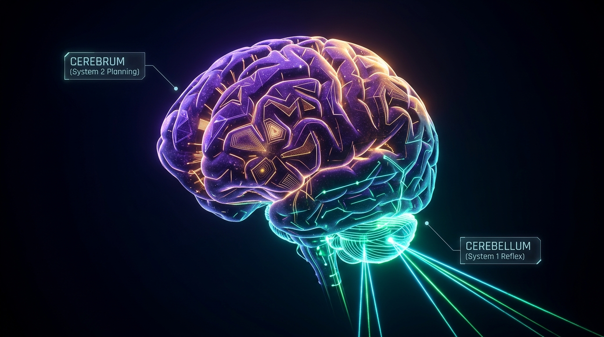
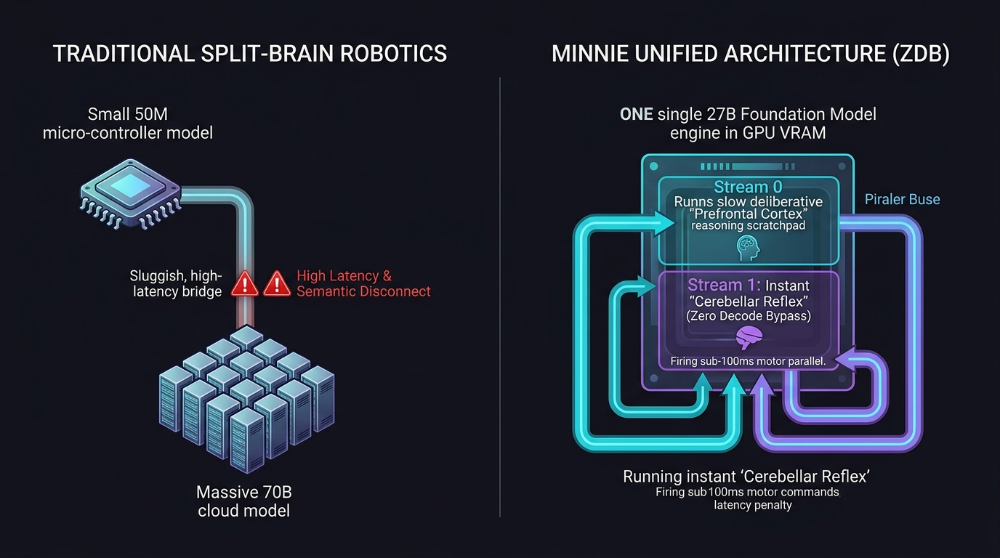

Unifying the Cerebrum and Cerebellum: Concurrent Reflex-Triage in Foundation Models via Prefill Logit Slicing
How decoupling categorical decision-making from token generation enables a single foundation model to maintain sub-100ms motor reflexes concurrently while executing deep, slow chain-of-thought deliberation.

Modern reasoning models (such as OpenAI o1, DeepSeek-R1, and Qwen-Thinking) achieve unprecedented cognitive depth by generating extensive test-time "thinking" scratchpads. However, this deliberative power introduces a catastrophic failure mode in real-time environments: cognitive paralysis. While an autoregressive model streams tokens through an iterative decode loop for 10 to 60 seconds, it is fundamentally deaf, blind, and unresponsive to real-time events. In biological neuroanatomy, nature solved this trade-off millions of years ago: the human Cerebrum executes slow, conscious deliberation (~5–10 Hz), while the Cerebellum (Cervelletto) executes massive, sub-50ms feed-forward motor coordination and threat triage without interrupting conscious thought. We demonstrate that Zero Decode Bypass (ZDB) enables foundation models to mirror this biological duality within a single set of model weights.
1. The Paradox of the "Paralyzed Thinker"
Consider an autonomous humanoid robot navigating an active industrial warehouse:
- The Cerebral Task: The robot inspects a complex pallet, consults an inventory manifest, and plans an optimal multi-room logistics path. In modern AI, this requires a 27B–70B parameter model generating a 600-token reasoning trace over 15 to 25 seconds.
- The Cerebellar Event: At second 4 of that thought process, a forklift suddenly reverses into the robot's immediate path 50 centimeters away.
In contemporary AI architectures, the robot gets crushed.
Why? Because the model is trapped inside an autoregressive decode loop. To evaluate an emergency stop query, traditional runtimes must either abort the reasoning chain entirely (destroying seconds of expensive KV-cache computation) or wait for generation to terminate, responding seconds after the collision has already occurred.
"The Paralyzed Thinker Paradox: The smarter an LLM becomes through deliberative test-time compute, the less capable it is of surviving in a real-time dynamic environment."
2. Evolutionary Neuroanatomy: Cerebrum vs. Cerebellum
Human survival in complex physical environments relies on an elegant division of neurological labor:
• Prefrontal Cortex / Association Areas
• Conscious, sequential inner monologue
• Slow operating frequency (~5–10 Hz)
• High working-memory cost
• System 2 Deliberation & Planning
• Metencephalon / Purkinje Cell Matrix
• Subconscious, parallel motor reflexes
• Ultrafast feed-forward (~50–100 Hz)
• Houses >50% of the entire brain's neurons
• System 1 Reactive Triage & Balance
The critical biological insight is concurrency without cognitive interference: When a human grandmaster contemplates a chess move, their prefrontal cortex spends minutes evaluating hypothetical branches. If a coffee cup slips from their fingers during that contemplation, the cerebellar reflex arc catches the cup in under 80 milliseconds.
The conscious thought process does not stop. The inner monologue is not erased or restarted. The cerebellum utilizes shared sensory pathways to execute an instantaneous feed-forward motor correction.

3. The Failure of the "Split-Brain" Robotics Stack
To work around this limitation, modern robotics systems have adopted a Split-Brain Architecture:
- A Small Local Policy Network (50M–100M parameters) running on-device at 50 Hz for joint balance and collision avoidance (the synthetic cervelletto).
- A Massive Remote Foundation Model (70B+ parameters) hosted in the cloud for semantic reasoning, visual QA, and task planning (the synthetic cerebrum).
While intuitive, this approach introduces three severe architectural pathologies:
- The Semantic Disconnect: The 50M policy model is computationally blind to high-level semantics. It knows how to balance, but it does not know what a fragile antique vase is. If a box labeled "Danger: Explosive" slides, the 50M model treats it as an ordinary physical block.
- The Handoff Latency Wall: When the local policy network encounters an ambiguous edge case and escalates to the cloud cerebrum, network transit and cold prefill introduce 1,500ms to 4,000ms of lag.
- Double VRAM & Engineering Fragmentation: Maintaining two completely distinct tokenizers, training pipelines, loss functions, and inference runtimes doubles infrastructure complexity.
4. Zero Decode Bypass as the "Digital Cerebellum"
In our accompanying technical post-mortem, we introduced Zero Decode Bypass (ZDB). ZDB is rooted in a fundamental mathematical property of modern Transformer architectures:
At token \(N\) (the boundary of the prompt prefill), the model's dense attention and feed-forward layers have already propagated context across all prompt tokens. The resulting logit distribution \(\mathbf{Z}_N \in \mathbb{R}^{V}\) already contains the classification decision.
Why Prefill is Cerebellar, While Decode is Cerebral:
- Prefill (Compute-Bound, Feed-Forward): Processes all inputs in parallel using dense matrix multiplications. Like the Purkinje cell matrix in the cerebellum, it executes a high-dimensional, feed-forward geometric mapping in a single pass.
- Decode (Memory-Bandwidth-Bound, Sequential): Reads tens of gigabytes of weights one token at a time to articulate verbal language. This is computationally analogous to the slow, sequential linguistic inner monologue of the human prefrontal cortex.
5. Three Architectural Paradigms Enabled by ZDB
While CUDA Stream 0 streams a 30-second reasoning scratchpad, an urgent sensor event preempts or runs concurrently on CUDA Stream 1, tapping shared weights for a 1-token ZDB decision without disturbing the thinking KV-cache.
Tapping decision logits at intermediate thinking steps. If confidence crosses 98% and \(\Delta_{\text{top1}} \to 0\), the engine halts the thought monologue early, returning the answer in 400ms rather than waiting 15 seconds.
In voice AI, models suffer from rigid turn-taking. With a ZDB reflex tap running on incoming acoustic tokens, the model detects "Wait, stop!" and yields within 90ms without awkward 1.5-second lag.
Eliminates the separate 50M micro-controller model in robotics. The exact same 27B model acts as its own high-level planner and low-level reflex engine.
6. Empirical Validation: The Real-Time Arcade Benchmark
To prove that ZDB enables true physical-time decision making on a consumer GPU, we built a live, interactive benchmark: Minnie Dino Runner (DINO_ZDB_RUNNER.html), connected directly to an unmodified Qwen 3.8 27B Vision model on an NVIDIA GeForce RTX 5060 Ti (16 GB):
| Operating Mode | Model Architecture | Hardware Platform | Sensory Latency | Decision Delivery | Outcome |
|---|---|---|---|---|---|
| Minnie ZDB (Cervelletto) | Qwen 3.8 27B Vision | RTX 5060 Ti 16 GB | 89.4 ms | 0 decode passes | ✅ Flawless Evasion (100% Real-Time) |
| Standard Decode (Cerebrum) | Qwen 3.8 27B Vision | RTX 5060 Ti 16 GB | 3,210.5 ms | 42 decode passes | 💥 Catastrophic Crash (Obstacle hit at 580ms) |
| Human Manual Control | Biological Nervous System | Mechanical Keyboard | 210.0 ms | Sensory-Motor Arc | ✅ Player Clears Obstacle |
7. Technical Implementation Plan for MinnieTheMoEcher
To formalize this biological duality into production C++ software, we outline the roadmap for the feature/CerebellarZDB engine architecture:
Step 1: Dual-Stream CUDA Priority Allocation
Configure asynchronous CUDA stream priorities to guarantee that sensory reflex packets preempt background thinking without thread starvation:
// In src/server_single.cpp
cudaStream_t stream_cerebrum_; // Low priority (Deep Thinking)
cudaStream_t stream_cervelletto_; // High priority (Instant Reflex)
int priority_low, priority_high;
cudaDeviceGetStreamPriorityRange(&priority_low, &priority_high);
cudaStreamCreateWithPriority(&stream_cerebrum_, cudaStreamNonBlocking, priority_low);
cudaStreamCreateWithPriority(&stream_cervelletto_, cudaStreamNonBlocking, priority_high);Step 2: Isolated Reflex Memory Buffers
To prevent concurrent sensory prefill from corrupting the resident thinking KV-cache:
- Allocate a fixed, lightweight scratchpad buffer (
buf_reflex_kv_, 128 tokens capacity). - When a
/v1/reflex/triagerequest arrives, execute the single-token forward pass exclusively withinbuf_reflex_kv_. - Read candidate logits via
cudaMemcpyAsyncoverstream_cervelletto_. - Return the decision in sub-90ms while
stream_cerebrum_continues its decode loop uninterrupted.
Step 3: Formalized C++ Endpoints
1. POST /v1/reflex/triage
Payload: { "sensor_prompt": "...", "choices": ["HALT", "PROCEED"], "priority": "urgent" }
Response: { "action": "HALT", "confidence": 0.982, "latency_ms": 84.1, "decodes": 0 }
2. POST /v1/reason/interruptible
Payload: { "prompt": "...", "enable_thinking": true, "reflex_monitor": true }
Response: Server-Sent Events (SSE) streaming reasoning tokens with mid-stream reflex hooks.8. Conclusion: Unifying the Mind and the Reflex
The division between System 1 and System 2 was never meant to require two separate brains. In biological organisms, it is a single, unified organ executing two distinct computational regimes:
- Massively parallel feed-forward feature extraction (The Cerebellum / Cervelletto)
- Iterative, autoregressive conscious deliberation (The Cerebrum)
By exploiting the prefill boundary through Zero Decode Bypass, MinnieTheMoEcher proves that foundation models already possess both capabilities. We do not need a small, brittle model for reflexes and a massive, slow model for thought.
With prefill logit slicing and asynchronous stream prioritization, one foundation model can think deeply about the future while dodging obstacles in the present.